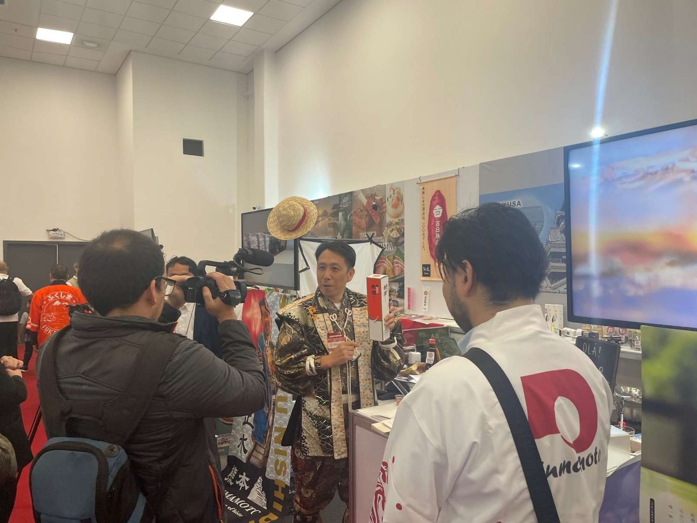
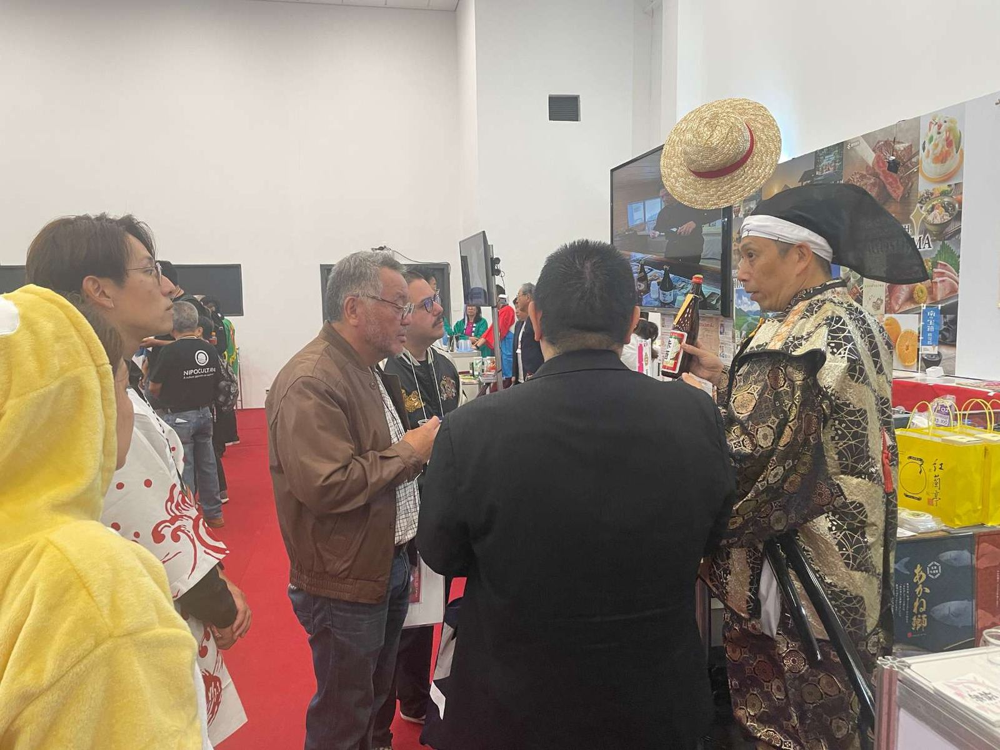
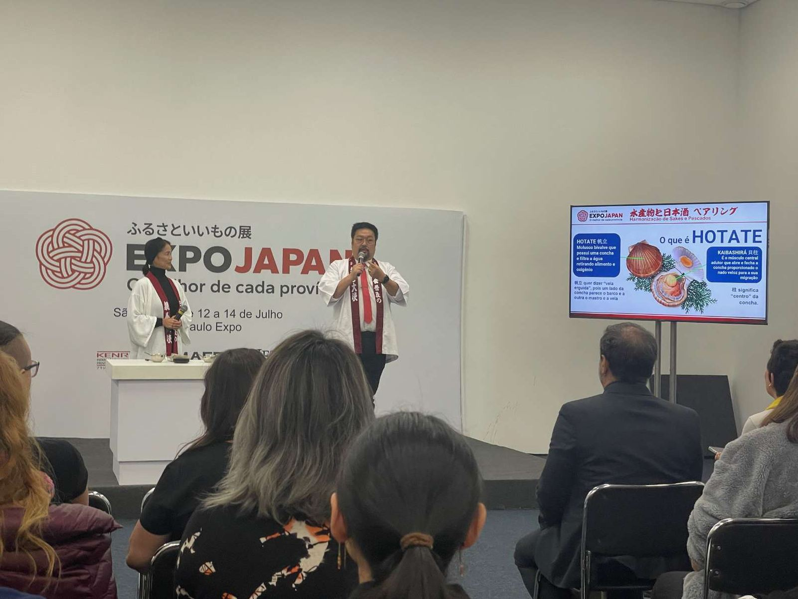
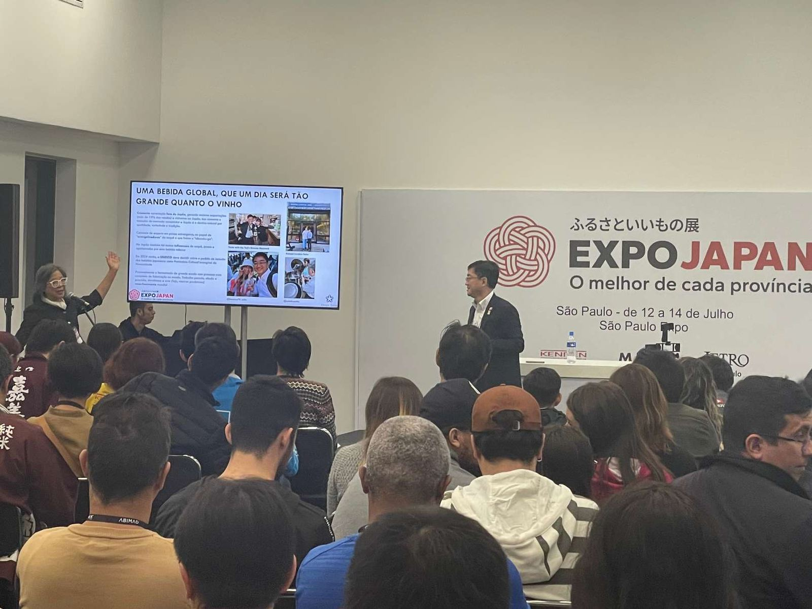
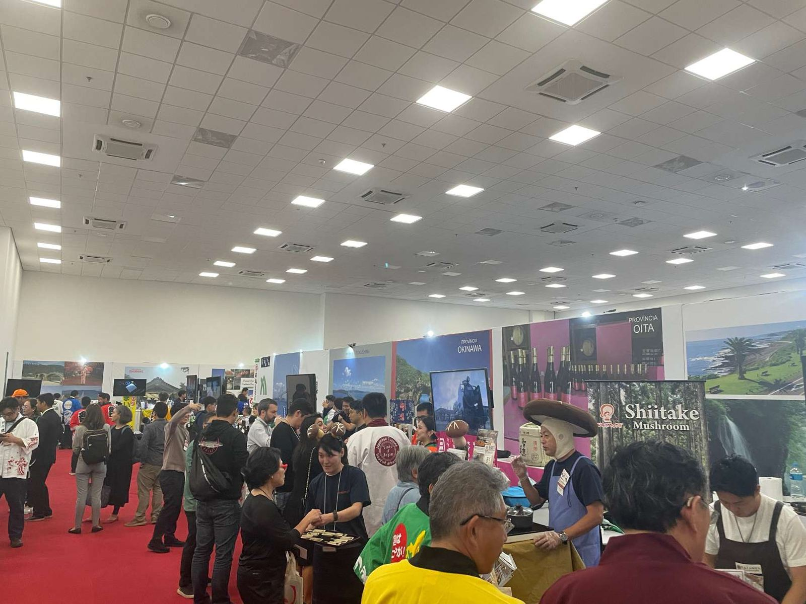
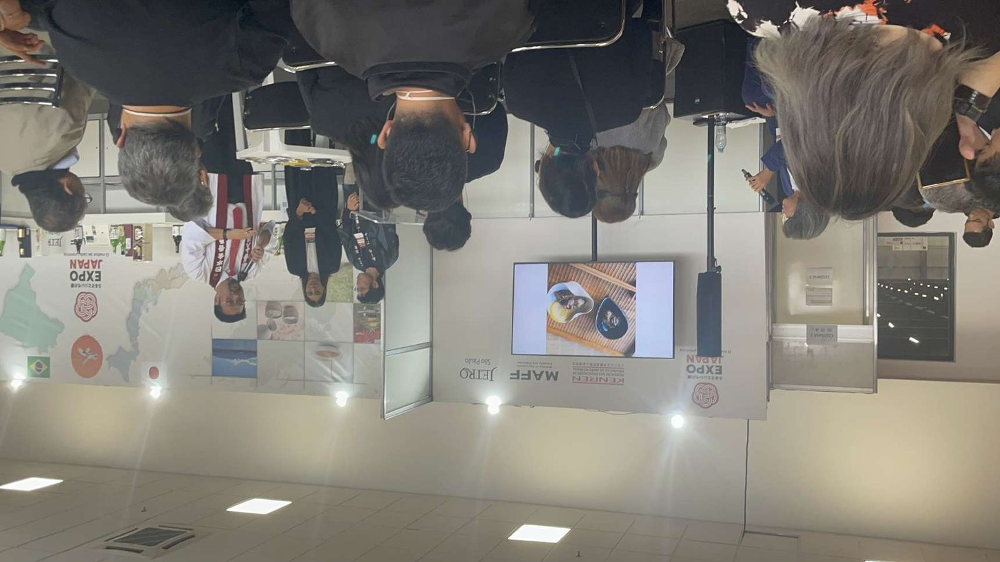
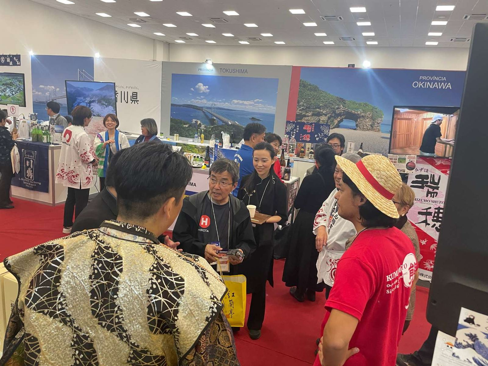
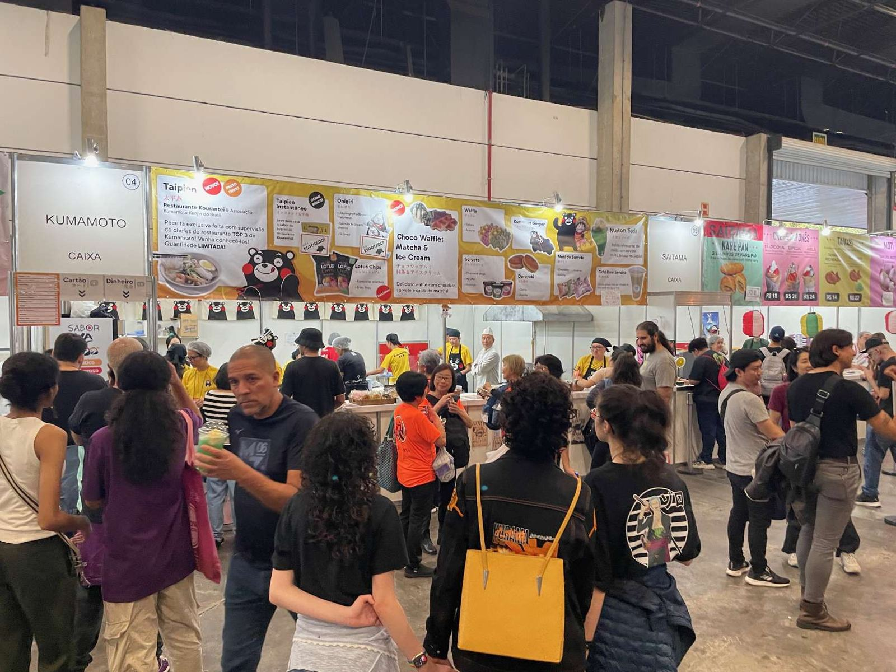
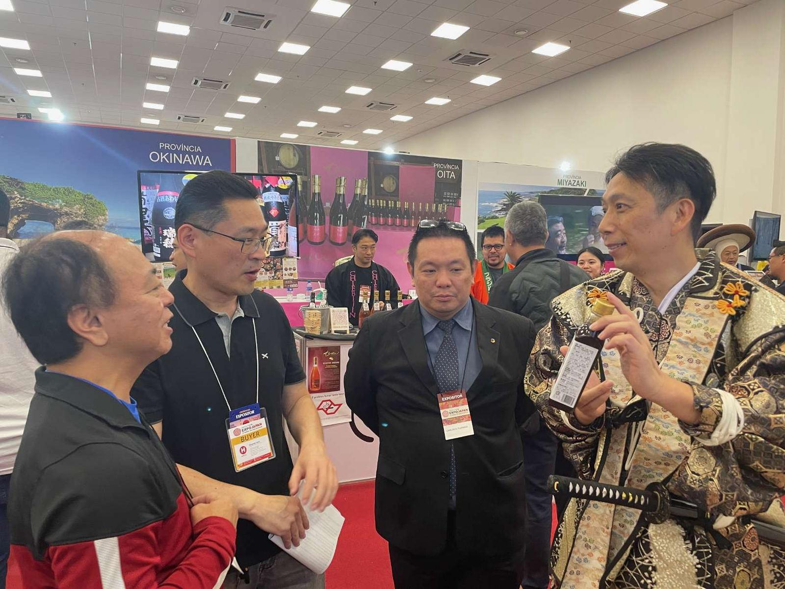

世界最大規模の「サンパウロ日本祭り」内に、新たに「第1回ふるさといいもの展」EXPO JAPANが設けられ、日本全国から多数のブースが出展。「熊本」ブースでは預かり出展10社とメーカー2社が現地に渡航し、現地商社・バイヤー・飲食関係者向けのプレゼンテーションと商談を展開しました。帰国後の2024年8月22日には、農林水産省の担当官を招いて熊本での参加報告会も開催しています。









対象、予算、時期が未定でも構いません。現在分かっていることと、まだ決まっていないことを整理します。
同様の海外事業を相談